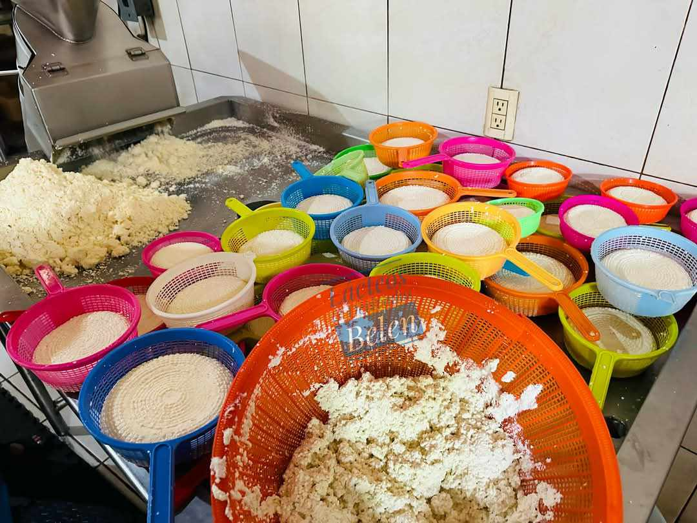
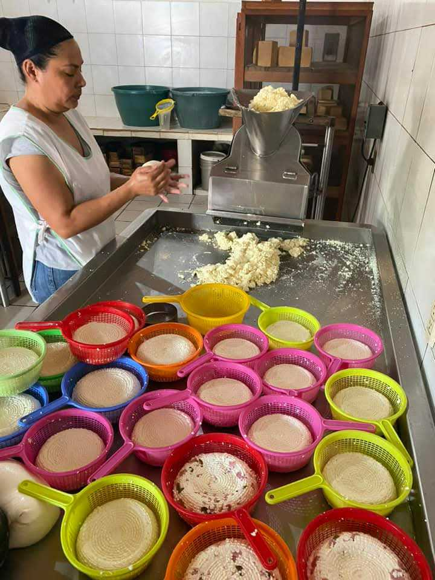
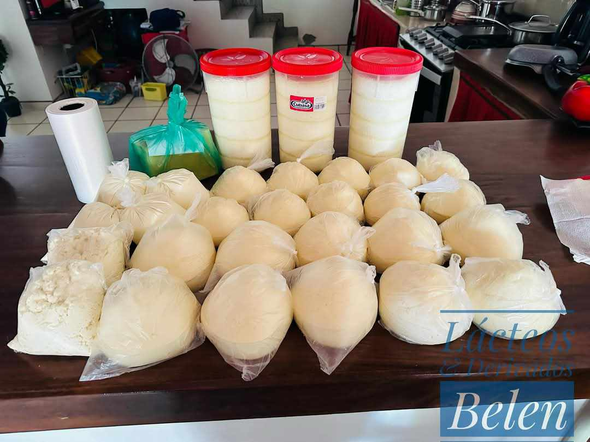
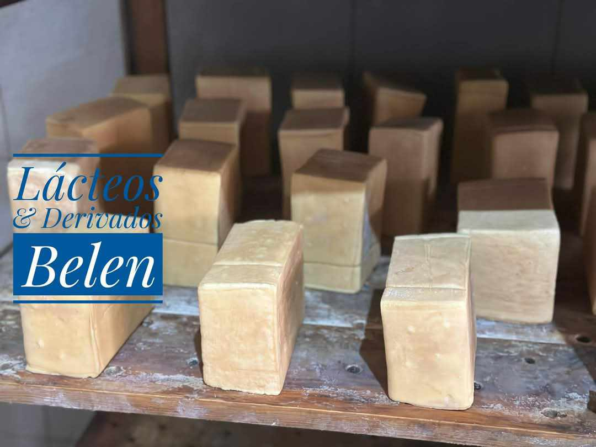
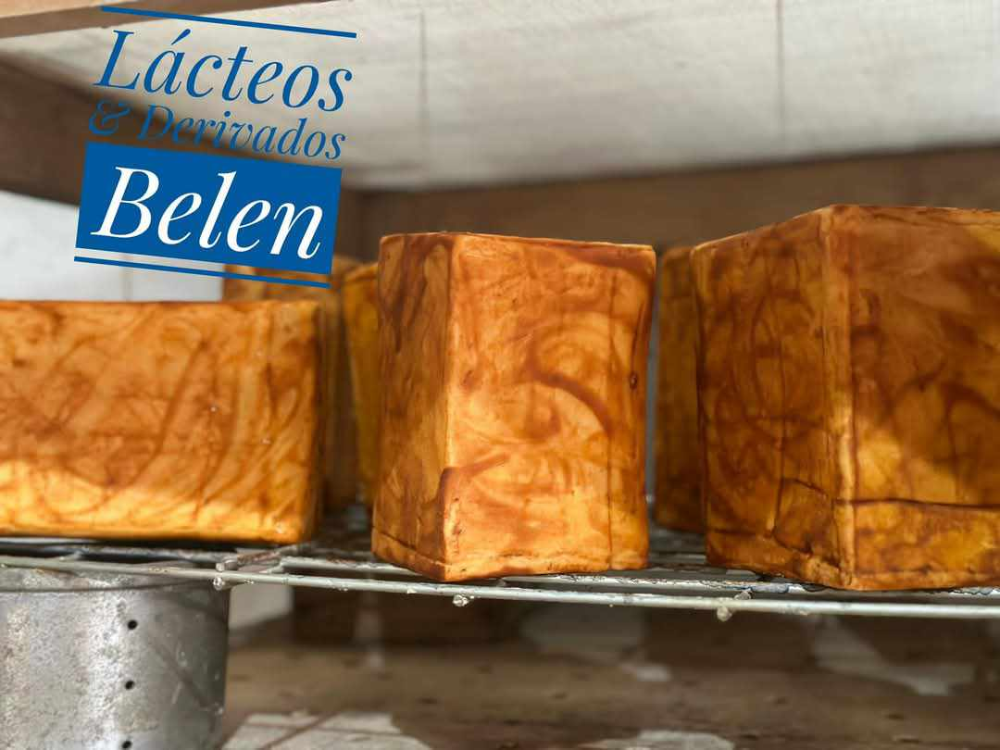

En nuestro rincón lácteo, nos enorgullece ofrecerte una selección de productos artesanales y de la más alta calidad, elaborados con pasión y dedicación. Descubre los sabores auténticos y tradicionales que tenemos para ti:
Queso Fresco:Nuestro queso fresco es suave, ligero y perfecto para cualquier momento del día. Ideal para ensaladas, tacos o simplemente disfrutarlo solo, su textura cremosa y su sabor delicado te conquistarán. |
 |
Panelas:Un clásico de la gastronomía mexicana. Nuestras panelas son frescas, firmes y ligeramente saladas, perfectas para acompañar con frijoles, salsas o incluso en un delicioso postre con miel y nueces. |
 |
JocoqueUn fermentado lácteo cremoso y lleno de sabor. Nuestro jocoque es versátil: úsalo como dip, para acompañar botanas o como ingrediente en tus recetas favoritas. ¡Una explosión de tradición en cada cucharada! |
 |
Requesón:Suave, esponjoso y bajo en grasa, nuestro requesón es perfecto para untar en pan, agregar a pastas o incluir en platillos saludables. Un producto fresco y nutritivo que no puede faltar en tu mesa. |
 |
Adoberas:Queso de origen mexicano con un sabor único y una textura firme. Nuestras adoberas son ideales para asar, freír o gratinar. ¡Déjalas doraditas y disfruta su delicioso sabor en tacos, sopes o como botana! |
 |
En Quesos y Derivados, nos esforzamos por brindarte lo mejor de la tradición láctea. Cada producto es elaborado con ingredientes naturales y procesos cuidadosos para garantizar su frescura y calidad. ¡Explora nuestra variedad y déjate seducir por el auténtico sabor de nuestros quesos y derivados!